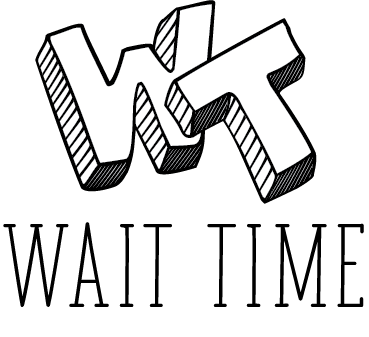
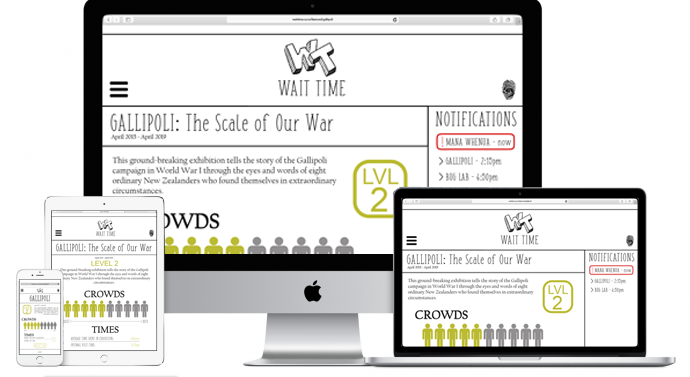

An essential tool for both the museum and visitors, Wait Time is the shortcut to an amazing Te Papa experience, allowing visitors to stay informed on upcoming and current events, as well as exhibitions on display.
Wait Time also provides information about crowd sizes, exhibition locations and wait times for popular exhibitions. The user also has the choice of using push notifications.
No idea what to do while you wait? Let Wait Time help!
Wait Time has five sections: Art, Featured, History, Kids and Nature.
Within each section are the exhibitions specific to that keyword (some show up more than once ie. Bug Lab is in Featured, Nature and Kids).
Each page features a small blurb about the exhibition, the crowd size and information on times (the last two update fequently). There is also the option to be notified about wait times.
The pages are colour-coded to match Te Papa's map colours ie. green is level two.
There are several other areas of Te Papa that are being considered for this website:

Wait Time is an easily accessible website designed for all device platforms, allowing for on the go information and feedback whether you're at Te Papa or relaxing at home.
There are several different ways in which the data of crowds and times could be collected and stored, such as:
No more waiting around, try Wait Time today!